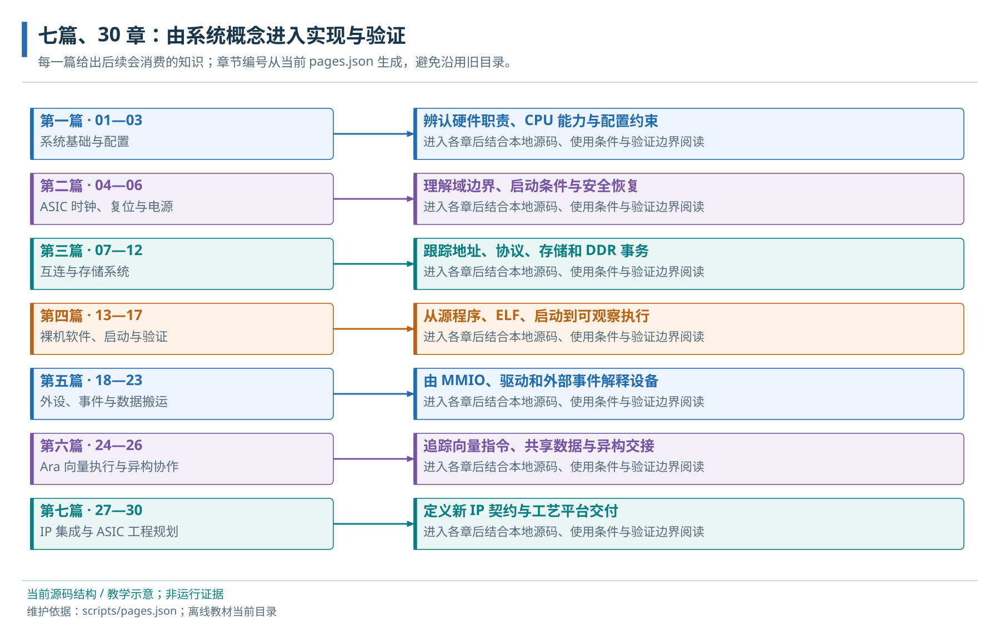

全书导览 · 展开查看各篇
这套教材面向具备 RTL、处理器和 C 基础，正在学习 RISC-V 平台软件的工程师。沿一份数组程序，依次建立程序、地址、存储、数据协作、启动和系统配置的关系，再进入操作系统与 ASIC 集成。
主阅读路径与知识依赖
推荐顺序是：平台职责与 CPU 使用模型 → C 程序的编译、链接和装载概览 → 地址译码与 AXI → Cache、LLC/SPM 与 DDR 边界 → iDMA、Ara 与共享数据 → 详细启动和外设运行 → 时钟、复位和配置 → OS、扩展集成与验证。前四章先建立从源代码到 main 的全流程；理解存储和事务之后，再解释 Boot ROM 如何准备运行环境、加载器如何放置程序。
首次实践可在编译链接章节完成实验 A：ELF 布局观察；读完启动与 JTAG 接管后，按实验 B：装载运行进入仿真操作。实验页提供直接步骤，不要求先读完 ASIC 章节。当前配置中不具备运行条件的实验会明确给出门槛，预期输出不能当作实测结果。
贯穿示例与各类文档职责
137 项数组示例贯穿 C 对象、初值/BSS、链接布局、装载、逐项校验和 UART 输出；Ara 使用相同结果规格解释向量分块。OS 章节继续解释同一调用和缓冲区在任务、进程中的变化。LVDS→ISP→NPU→Ara 的帧处理是未来集成案例。
| 阅读任务 | 主要入口 | 内容边界 |
|---|---|---|
| 连续理解机制 | 下方九篇教材；同步 Markdown 阅读版 | 概念的主要解释位置，正常流程、源码落点和成立条件。 |
| 查询参数、地址、寄存器 | 配置参考、地址空间、寄存器索引 | 按子系统查字段、默认/覆盖关系与修改影响，不以字典代替教程。 |
| 执行、排错和继续集成 | 实验手册、软件操作参考、固定配置提取交接书 | 环境、命令、预期结果、失败入口和真实证据；工程修改按任务授权。 |
第一篇 · 系统与程序执行
- 01 · 整体架构与平台边界 — 取指、数组计算与字符输出中的 SoC 模块协作。
- 02 · CVA6 与 RISC-V 程序使用模型 — 指令集、处理器状态、特权级与存储接口。
- 03 · 裸机 C 程序运行模型 — C 对象、函数调用、初始化与存储布局。
- 04 · 工具链、链接与 ELF — 源文件、对象文件、链接布局与 ELF 装载产物。
第二篇 · 地址、互连与存储层次
- 05 · 地址空间与访问属性 — 地址路由窗口、实际资源容量与 CPU 访问属性。
- 06 · AXI 通道、突发与握手 — AXI 读写事务的通道握手与完成语义。
- 07 · AXI Crossbar 结构与事务路由 — 地址译码、仲裁、写数据路由与 ID 响应关系。
- 08 · 接口适配与 RegBus — 位宽、协议、ID 转换与跨时钟域接口。
- 09 · Cache、LLC/SPM 与存储路径 — 缓存副本、地址别名与共享物理阵列。
第三篇 · 数据搬运、向量计算与共享
- 10 · iDMA、流量管理与总线错误 — 数据搬运提交、完成、流量管理与本地执行条件。
- 11 · Ara 结构与 CVA6 协处理器接口 — 向量请求、应答、CPU 提交与执行完成的协作关系。
- 12 · RVV 编程与结果验证 — 数组运算的汇编、intrinsics 与自动向量化实现。
- 13 · CPU、Ara、DMA 与 NPU 的共享数据 — 共享数据的可见性、所有权与交接协议。
第四篇 · 启动、外设与软件运行环境
- 14 · Boot ROM、启动模式与应用初始化 — ROM 服务、程序装载与应用入口的执行关系。
- 15 · JTAG 与程序加载调试 — 外部调试、程序装载与执行接管条件。
- 16 · 异常、中断与上下文 — 函数调用、异常中断与任务上下文的保存责任。
- 17 · MMIO 驱动、UART 与 GPIO — 寄存器访问、设备初始化与引脚行为。
- 18 · 定时器与中断系统 — 计时、中断使能、服务、清源与返回流程。
- 19 · I2C 与 EEPROM — I2C 线路、FIFO、控制寄存器与 EEPROM 读取。
- 20 · SPI、NOR 与 SD — SPI 控制器事务与 NOR、SD 设备协议。
- 21 · Serial Link、VGA 与 USB — 串行链路、显示与 USB 的控制、数据和验证条件。
第五篇 · 时钟、复位与工程配置
- 22 · 时钟系统与 PLL — 时钟域、使能、同步器与平台时钟源。
- 23 · 复位体系与平台启动条件 — 复位、平台就绪与在途事务的生命周期。
- 24 · Cheshire、CVA6、Ara 与软件配置 — 硬件字段、参数消费者与软件配置的一致性。
第六篇 · RTOS 与嵌入式 Linux
- 25 · RTOS 任务、调度与同步 — 任务运行、阻塞、唤醒与同步的状态转换。
- 26 · 保护、页表与进程地址空间 — 物理布局、虚拟地址翻译与设备地址语义。
- 27 · 嵌入式 Linux 启动与用户程序 — 平台固件、内核与首个用户进程的启动关系。
- 28 · 操作系统中的设备与缓冲区 — 裸机、RTOS 与 Linux 的设备调用和缓冲区管理。
第七篇 · IP、DDR 与系统协作
- 29 · 自定义 IP 的控制、数据和中断接入 — 独立 Reg 设备与系统控制、数据及中断接口。
- 30 · DDR 控制器、PHY 与 AXI4 接入 — DDR 平台初始化、访问放行与接口交付条件。
- 31 · LVDS、ISP、NPU 与外部 DDR 集成 — 图像处理 IP 的接口、缓冲、跨域与集成条件。
- 32 · 模型任务划分与容量带宽预算 — 明确假设下的 Ara/NPU 协作与数据搬运成本。
第八篇 · ASIC 资源与物理实现
- 33 · 电源域与低功耗规划 — 现有 RTL 的电源边界与候选低功耗契约。
- 34 · Ara VRF 与 SRAM 宏接口 — VRF 消费者的容量、时序与候选技术映射。
- 35 · 跨时钟与复位域的事务交接 — 跨域信号同步、事务传输与生命周期协调。
- 36 · 外设逻辑接口、PAD 与封装连接 — I2C 连接的信号方向、电气条件与板级职责。
- 37 · 时序约束与物理实现反馈 — 存储接口路径的时序约束、分析与布局影响。
- 38 · Scan、MBIST 与制造测试 — Scan、存储测试与功能验证的交付范围。
- 39 · 首硅启动与系统可观测性 — 首硅早期状态观测与存储、计算能力的分阶段验证。
- 40 · 固定配置工程与 ASIC 集成验收 — 固定配置、可搬迁输入与 ASIC 分阶段验收。
第九篇 · 验证、测量与实验记录
- 41 · Questa/VCS 仿真与结果验证 — 仿真输入、目标运行、结果数据与退出判据。
- 42 · 正确性、性能与论文实验记录 — 计时边界、数据条件与可重复的性能比较。
当前实现、项目目标与验证边界
CVA6 承担控制与通用计算；Ara 承担向量计算，包括 NPU 不适合的部分浮点向量运算。目标是加入自研 ISP、NPU、LVDS 与外购 AXI4 DDR。当前源码中有 CPU/Ara、互连、LLC/SPM 和 FPGA DDR 集成参考，新 IP、独立片上 Global Buffer、Ara 分流及 DDR 旁路还没有实现。近期主 Xbar 保持 64-bit 的需求与 GB 讨论以M01 接口契约为准，不能据示意图认定已连接。
用户报告的 VCU118 HelloWorld 不等于本轮重新板测，也不能扩展为 Ara、DDR 全功能或 ASIC 就绪。Platform ROM 返回路径、iDMA 控制通路及目标运行缺口保持开放。RTOS/Linux 的教程和上游支持不等于当前镜像已经启动；OS 移植也不是裸机 ASIC 提取的前置条件。当前结果见本轮文档检查，历史实验保留原日期和输入。
内容维护与历史资料
正文和图片离线可读，源码跳转需要完整仓库。主教程的唯一正文源为 content/*.html；HTML 与 Markdown 阅读版由同一生成器输出，首页目录、章号、侧栏和上下页共用 pages.json。字段字典及操作参考继续在既有 Markdown 中维护，职责与检查命令见维护说明。重构记录保存问题、迁移和未验证项。
历史路线与既有成果
最初源码调查保留旧版本和独有案例，旧站备份供追溯。下面七篇/30 章图是历史资料，现行阅读顺序由本页目录定义。

故障诊断与已知问题索引
启动与软件 · 外设 · Ara/RVV · 操作系统 · 平台、集成与测量。诊断用于按症状定位；核心机制和必要运行条件仍在对应正文中。